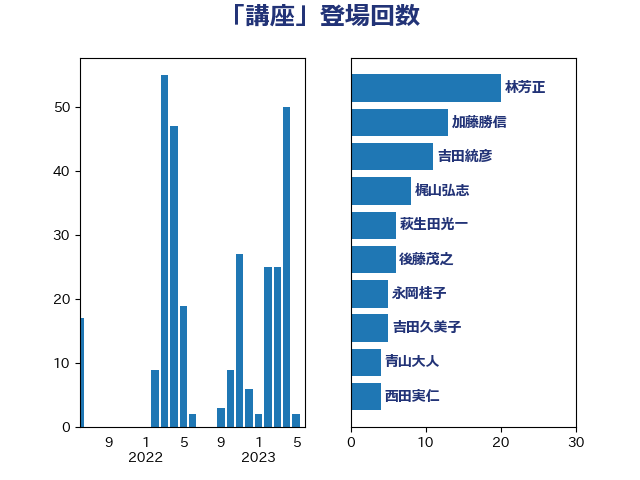

単語「講座」

| 林芳正 | 自由民主党 | 20 回 |
| 加藤勝信 | 自由民主党 | 13 回 |
| 吉田統彦 | 立憲民主党 | 11 回 |
| 梶山弘志 | 自由民主党 | 8 回 |
| 萩生田光一 | 自由民主党 | 6 回 |
| 後藤茂之 | 自由民主党 | 6 回 |
| 永岡桂子 | 自由民主党 | 5 回 |
| 吉田久美子 | 公明党 | 5 回 |
| 青山大人 | 立憲民主党 | 4 回 |
| 西田実仁 | 公明党 | 4 回 |
| 末松信介 | 自由民主党 | 4 回 |
| 角田秀穂 | 公明党 | 3 回 |
| 芳賀道也 | 国民民主党 | 3 回 |
| 竹谷とし子 | 公明党 | 3 回 |
| 福重隆浩 | 公明党 | 3 回 |
| 牧島かれん | 自由民主党 | 3 回 |
| 柴田巧 | 日本維新の会 | 3 回 |
| 平林晃 | 公明党 | 3 回 |
| 倉林明子 | 日本共産党 | 3 回 |
| 鈴木義弘 | 国民民主党 | 2 回 |
| 金子道仁 | 日本維新の会 | 2 回 |
| 羽生田俊 | 自由民主党 | 2 回 |
| 畦元将吾 | 自由民主党 | 2 回 |
| 漆間譲司 | 日本維新の会 | 2 回 |
| 浜田靖一 | 自由民主党 | 2 回 |
| 河野太郎 | 自由民主党 | 2 回 |
| 池下卓 | 日本維新の会 | 2 回 |
| 斉藤鉄夫 | 公明党 | 2 回 |
| 岸田文雄 | 自由民主党 | 2 回 |
| 宮本徹 | 日本共産党 | 2 回 |
| ながえ孝子 | 無所属 | 2 回 |
| 鳩山二郎 | 自由民主党 | 1 回 |
| 階猛 | 立憲民主党 | 1 回 |
| 野田聖子 | 自由民主党 | 1 回 |
| 赤羽一嘉 | 公明党 | 1 回 |
| 西銘恒三郎 | 自由民主党 | 1 回 |
| 若松謙維 | 公明党 | 1 回 |
| 神田憲次 | 自由民主党 | 1 回 |
| 礒崎哲史 | 国民民主党 | 1 回 |
| 石井啓一 | 公明党 | 1 回 |
| 田中健 | 国民民主党 | 1 回 |
| 渡辺孝一 | 自由民主党 | 1 回 |
| 深澤陽一 | 自由民主党 | 1 回 |
| 水岡俊一 | 立憲民主党 | 1 回 |
| 梅村みずほ | 日本維新の会 | 1 回 |
| 本村伸子 | 日本共産党 | 1 回 |
| 斎藤嘉隆 | 立憲民主党 | 1 回 |
| 広瀬めぐみ | 自由民主党 | 1 回 |
| 岬麻紀 | 日本維新の会 | 1 回 |
| 岡田直樹 | 自由民主党 | 1 回 |
| 尾身朝子 | 自由民主党 | 1 回 |
| 小野田紀美 | 自由民主党 | 1 回 |
| 小野泰輔 | 日本維新の会 | 1 回 |
| 宮路拓馬 | 自由民主党 | 1 回 |
| 安江伸夫 | 公明党 | 1 回 |
| 太田房江 | 自由民主党 | 1 回 |
| 大島敦 | 立憲民主党 | 1 回 |
| 堤かなめ | 立憲民主党 | 1 回 |
| 國重徹 | 公明党 | 1 回 |
| 吉良よし子 | 日本共産党 | 1 回 |
| 吉川元 | 立憲民主党 | 1 回 |
| 古賀友一郎 | 自由民主党 | 1 回 |
| 伊藤孝恵 | 国民民主党 | 1 回 |
| 伊佐進一 | 公明党 | 1 回 |